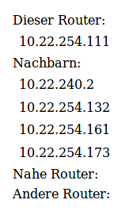

Um die Karte in einem Netzerk zu verwenden, muss ein einziger Router eingerichtet werden, damit die Webseite die Daten von diesem Router laden kann.
ssh root@frei.funk
vi /etc/config/olsrdDrücke "i", um zu editieren und navigiere nach unten, um die Zeile
option httpheaders 'yes'in die Konfiguration des JSON-INFO-Plugins einzufügen. Meine Konfiguration sieht so aus:
config LoadPlugin
option accept '0.0.0.0'
option library 'olsrd_jsoninfo.so.0.0'
option ignore '0'
option httpheaders 'yes'
reboot
Nun solltest Du eine Anfrage senden können, die mit HTTP-Headern beantwortet wird: http://frei.funk:9090/config
HTTP/1.1 200 OK Date: Wed, 03 Apr 2019 12:32:57 GMT Server: OLSRD JSONInfo plugin Connection: closed Content-type: application/json Access-Control-Allow-Origin: * Access-Control-Allow-Methods: GET, POST, OPTIONS Access-Control-Allow-Headers: Accept, Origin, X-Requested-With Access-Control-Max-Age: 1728000 Content-length: 3126 Cache-Control: no-cache
Du kannst nun die IP deines Routers in der Konfiguration
der Karte eingeben.
Dann sollten Router aufgelistet werden.
Hier siehst Du ein Beispiel:

Zurück zur Karte